Robô Aspirador de Pó Inteligente Mop 2
Seu Expert em Limpeza
Alto poder de sucção de 2700Pa*
Passa pano e esfrega*
Controle à distância pelo App*
Até 110 minutos de bateria*
Do que você precisa para andar descalço confortavelmente pela casa?
Você precisa de um expert em limpeza
para manter seu piso impecável
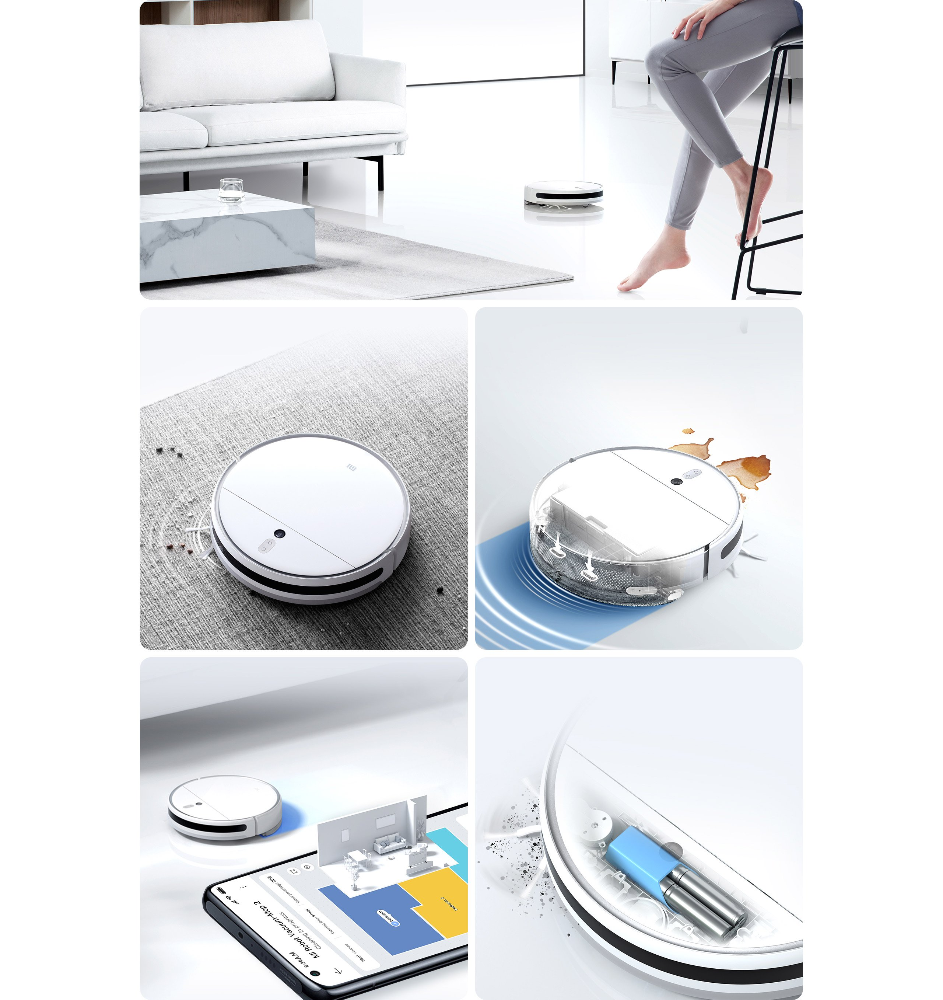
Sucção de 2700Pa
Limpeza potente e rápida
Esfrega com vontade
Limpeza eficiente para remover manchas
Aplicativo para controlar e acompanhar a limpeza
Zoneamento automático, você determina o local da limpeza
Até 110 minutos de bateria
Limpa a sua casa com apenas uma recarga
Limpeza profunda para remover até mesmo pequenas partículas de pó
Alto poder de sucção de 2700Pa*
para uma limpeza rápida e precisa
Motor sem escova com tecnologia japonesa da NIDEC, maior fabricante de motores do mundo. Poder de sucção forte e consistente para remover sujeiras e detritos em um instante. De pequenas partículas de poeira a cabelos, de grandes migalhas a detritos, o Robô Aspirador de Pó Inteligente Mop 2 limpa tudo de forma rápida.
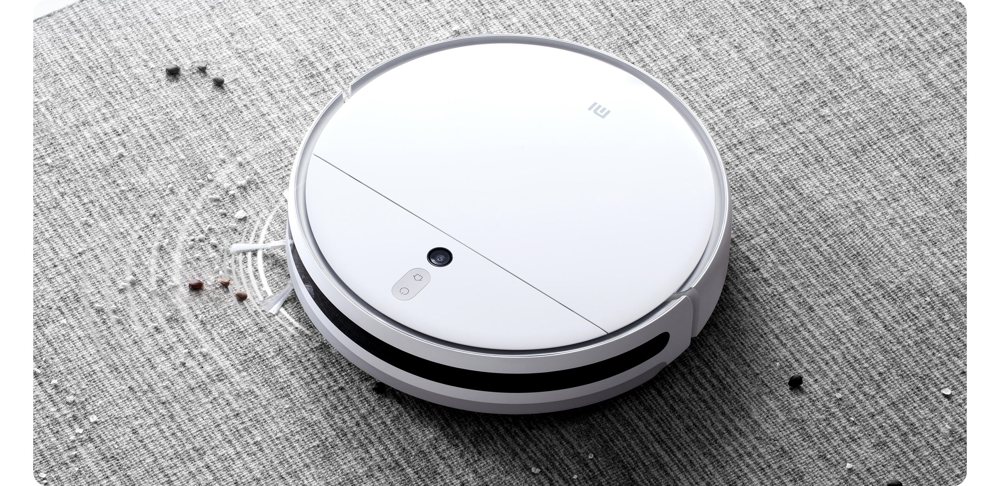
NIDEC
Motor sem escova japonês
4
velocidades
Modos de limpeza
550
mL
Coletor de lixo de alta capacidade
Nova escova para limpar cantos e pequenos espaços
A escova principal de fibra superdensa com 0,1mm de espessura e a nova escova lateral são capazes de limpar profundamente
os cantos e pequenas frestas entre os pisos.
Escova lateral hexagonal
para maior cobertura
Limpeza eficiente e remoção de poeira fina
Escova principal de fibra
superdensa com 0,1mm
Alcança até as menores frestas
O mais completo da categoria:
aspira, passa pano e esfrega
Esfregão pressurizado para ajudar a remover manchas
Elimina facilmente4 manchas de água, poeira e muito mais.
Capaz de limpar uma casa inteira de até 150m² de uma só vez
Equipado com um tanque de água inteligente de 250mL*, que libera a quantidade de água ideal para limpar
um piso de 150m² sem reabastecer.
150㎡
Sistema de Navegação 4.0
Mapeia com precisão todos os cômodos da casa e planeja a rota de limpeza mais eficiente
O sistema de navegação funciona como os olhos do robô e permite que ele analise com precisão os ambientes domésticos enquanto se move ao mesmo tempo que cria um plano de limpeza eficaz para sua casa.
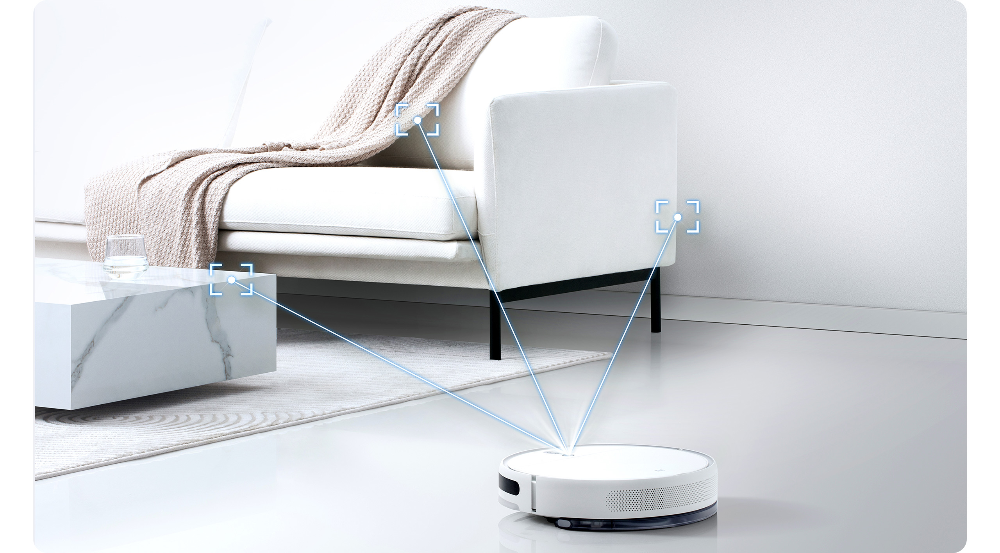
Aplicativo fácil de usar e perfeito para iniciar uma faxina mesmo a distância, onde você estiver e para o cômodo que quiser
O robô aspirador cria o mapa da casa automaticamente e permite que você personalize o nome de cada cômodo.
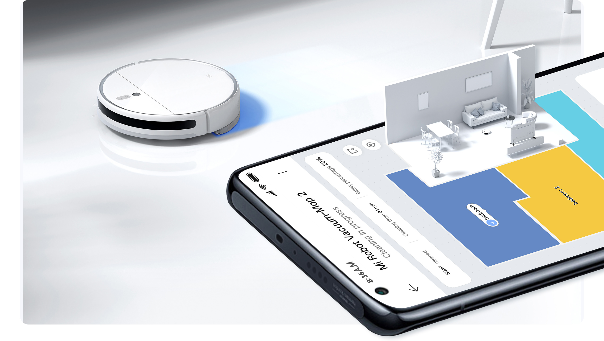
Novo chip Cortex™-A53, processador
quad-core de alta eficiência
O novo processador quad-core Cortex™-A53 combinado com o algoritmo VSLAM garantem a autonomia do robô aspirador em construir um mapa do ambiente ao mesmo tempo que se localiza.
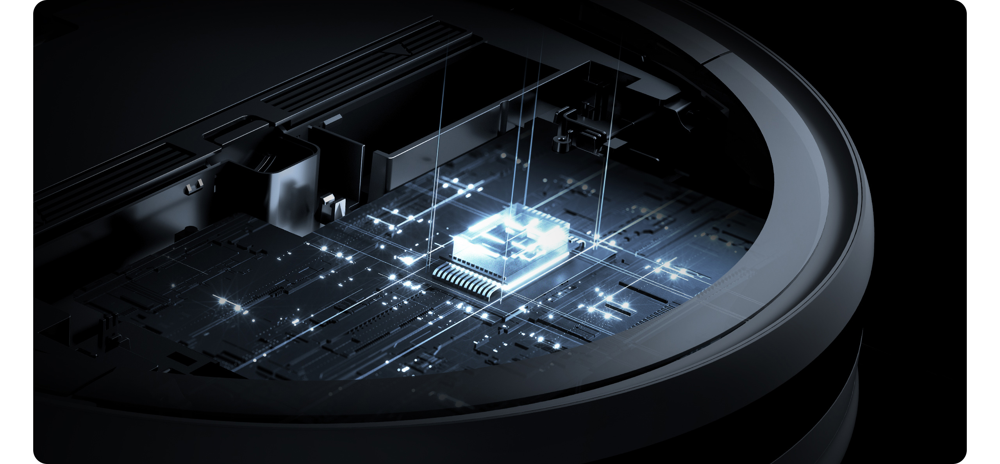
Até 110 minutos de bateria para limpar uma casa grande
Maior capacidade de bateria com 3200mAh para 110 minutos de duração* no modo padrão, economizando tempo
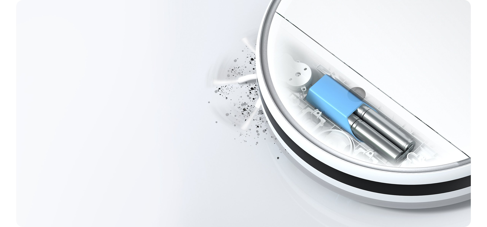
3200
mAH
Bateria de alta capacidade
110
min
Até 110 minutos de bateria
Aplicativo Mi Home/Xiaomi Home
Aplicativo gratuito cheio de recursos para monitorar sua limpeza em tempo real com controle e programação da faxina a distância.
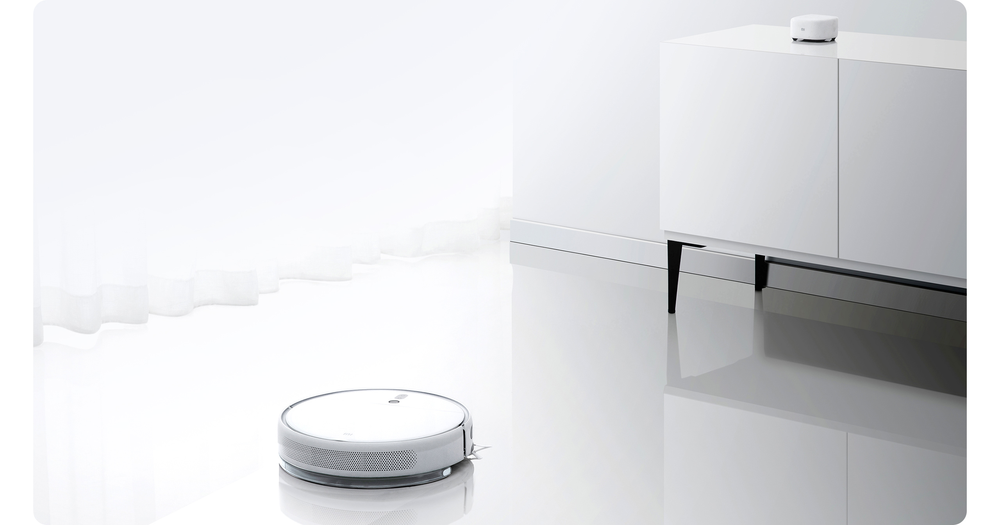
Desempenho além da expectativa
Evolução que facilita ainda mais o seu dia
Robô Aspirador de Pó
Inteligente Mop 2
Robô Aspirador de Pó Inteligente Mop
2700Pa de sucção
2500Pa
3200mAh de capacidade de bateria
2600mAh
Escova lateral hexagonal
para maior cobertura
Escova lateral tripla
Varre, aspira, passa pano e esfrega
Varre, aspira e passa pano
250mL de capacidade do tanque de água
200mL
Mais recursos!
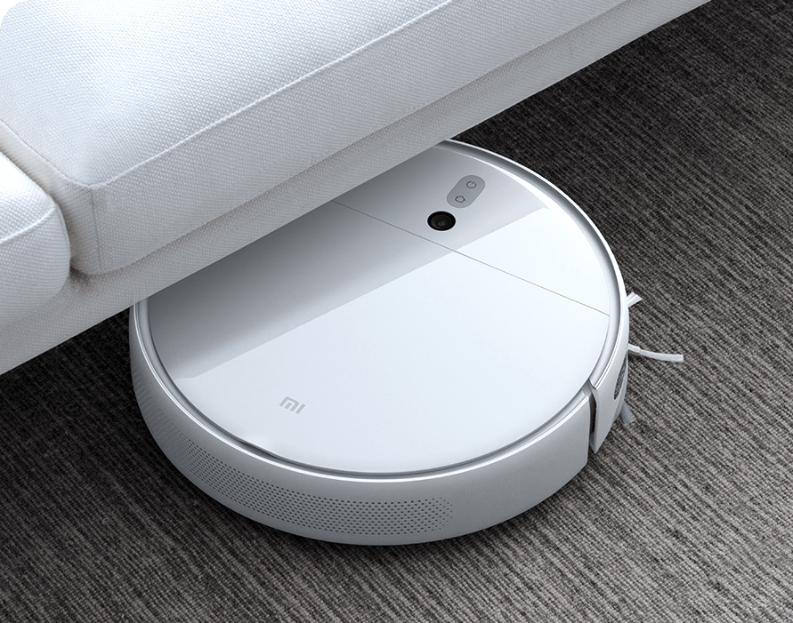
Apenas 8,1cm de altura
Movimentação livre pela casa
Retorna automaticamente para a base para carregar
Após recarregar, o Robô Aspirador de Pó Inteligente Mop 2 retoma a limpeza de onde parou
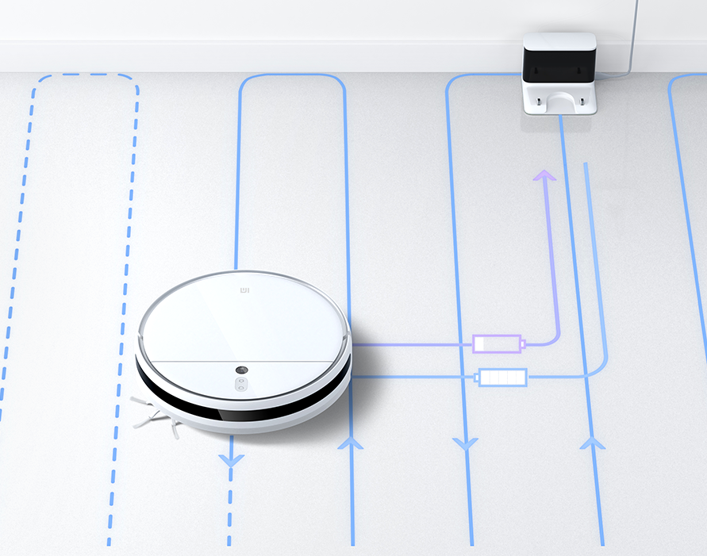
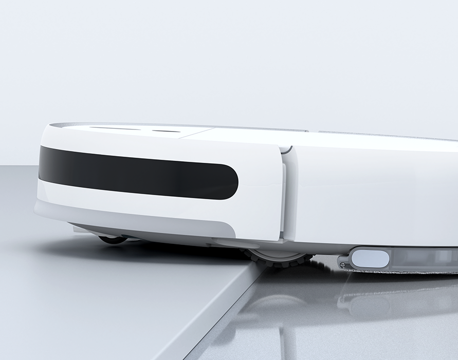
Capaz de atravessar obstáculos até 20mm
Passa facilmente por soleiras das portas, trilhos e tapetes
Suporte a atualizações OTA
Mais recursos estão esperando para serem descobertos
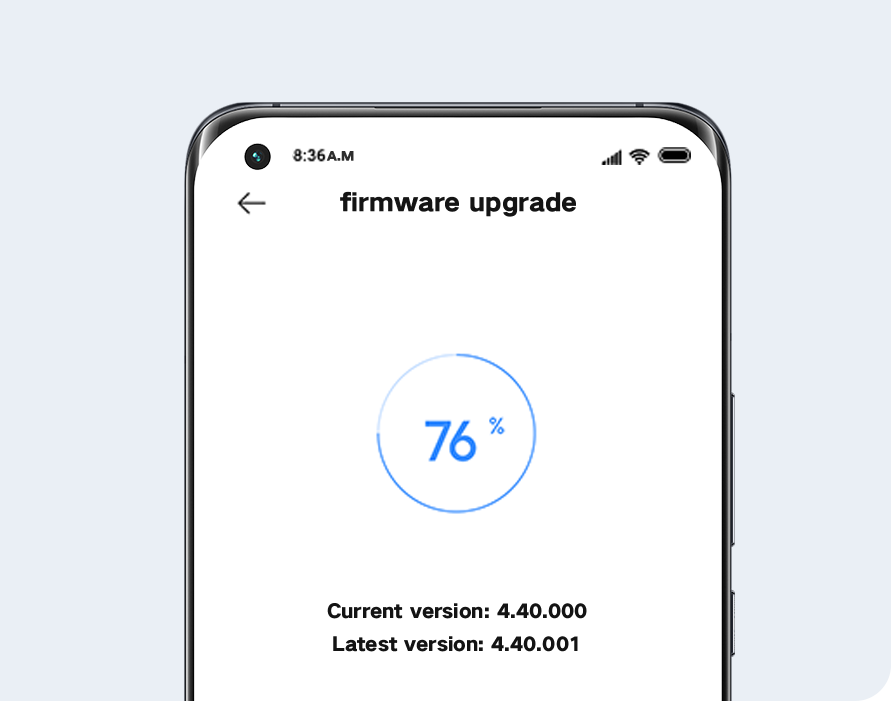
*1. 150m² Área de limpeza: Os dados da área de limpeza são obtidos do Laboratório de Tecnologia Dreame. O Robô Aspirador de Pó Inteligente Mop 2, com o tanque de água cheio, começa a funcionar na configuração de pulverização média e esfrega em um espaço aberto retangular de 4 × 5m, completando mais de 8 ciclos.
*2. Potência de sucção de 2700Pa: Os dados do teste de pressão do ar são obtidos do laboratório Dreame Technology. O Robô Aspirador de Pó Inteligente Mop 2 é testado com equipamento de validação de desempenho do ar. Indica que a potência máxima de sucção a vácuo na entrada de ar pode atingir mais de 2700Pa no modo de potência extra alta.
*3. O Robô Aspirador de Pó Inteligente Mop 2 totalmente recarregado no modo padrão em um piso aberto retangular de 4 × 5 m leva 110 minutos para descarregar a bateria. O tempo de operação quando a bateria acaba é registrado e o teste é repetido três vezes com o mesmo ambiente e método. Os tempos de operação após cada carga única excederam 110 minutos de acordo com os dados do Dreame Technology Laboratory.
*4. Comparado com o Robô Aspirador de Pó Inteligente Mop, o Robô Aspirador de Pó Inteligente Mop 2 adiciona dois pontos de pressurização, durante a limpeza, mantendo uma pressão descendente estável em todo o tanque de água devido à força de compressão, conseguindo assim aumentar a pressão do tanque de água no solo.
*5. Tanque de água de 250 ml: 1. Use uma balança eletrônica (precisão 0,01g) para pesar o tanque de água vazio;2. Encha o reservatório de água com água da torneira e pese-o na balança eletrônica;3. Capacidade do tanque de água é igual ao peso do reservatório cheio menos o peso do reservatório vazio, repita os passos 1, 2 para testar três vezes, registre o valor médio da capacidade do tanque de água. O resultado da medição é: 250±5%mL. O relatório de teste vem do Laboratório de Tecnologia Dreame.